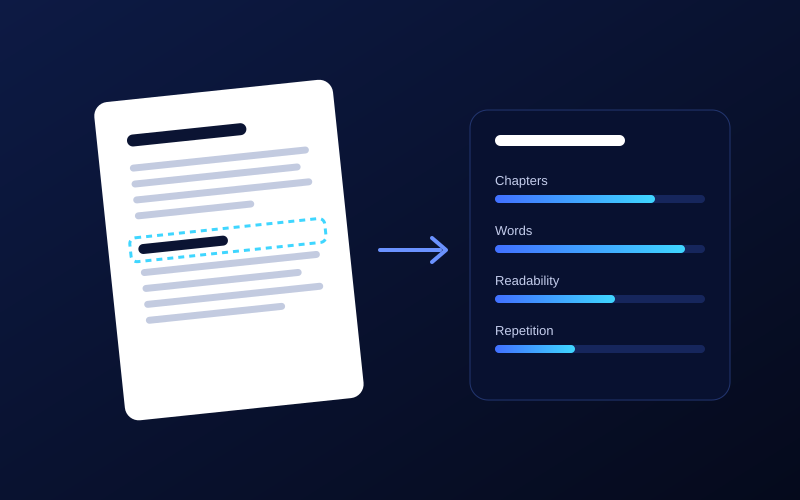

In development
BookIntel
An AI-assisted book intelligence platform concept. It is designed to help independent authors analyse a manuscript and receive an evidence-based report to support editing and publishing decisions.
Built so far
- Account sign-in
- Uploading a Word (DOCX) manuscript and extracting its text
- Chapter detection from the manuscript's headings
- A measurement layer that calculates figures such as word counts, readability and repetition, which every future report finding must cite
Not built yet
- The AI-written manuscript reports
Not launched yet, so there is no public link.